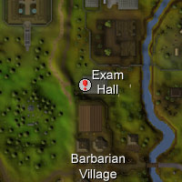
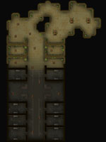
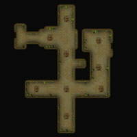
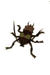

Stronghold of Player Safety
Introduction

In modern times, it has been rediscovered, and has become a place of education - well, sort of. Above this prison is the Misthalin Training Centre of Excellence, where young adventurers are sent to test whether they know how to keep themselves safe in RuneScape. Attached is a new prison, with gublinch crowding the cells. Those who pass muster may, if they choose, then venture deeper into the old prison, where great rewards may await...
Location

Points of Interest

The Misthalin Training Centre of Excellence itself is much as you might expect: several tables with people sitting tests, and a pacing professor, Professor Henry, who will ask you a few questions. Assuming you get them right, he will reward you with two magical lamps, a new emote and permission to enter the cockroach- and mugger-filled ruins of the old prison.

You will enter on the middle floor of the prison and, initially, it won't seem too much different from any prison that lets its prisoners run the place. The muggers should prove little challenge for most, and, even after venturing further and discovering the decay and rot that has set in, the cockroach drones are little more threat. To the east is a small network of caves dug out by the cockroaches, and inhabited by the larger, more dangerous workers.
There are numerous stairs around this floor, although most head to the bottom floor. If you wish to go to the top floor, head for the north-east corner.
The ground floor of the prison is much the same as the floor above, as the cells give way to the more organic shapes of the cockroach caves.



On your travels around the prison, you will probably notice a couple of locked doors, which can be opened if you find and pull a lever somewhere in the prison. Going through one of these doors will lead you to a separate chamber:
This area is populated by cockroach soldiers, but also conceals a chest filled with loot for the determined adventurer.
Personalities
|
Professor Henry has presumably earned his title, and now makes use of it by making sure that the youth of RuneScape know how to keep themselves safe. It's an important job, and comes with an important-looking hat!
|
| Professor Henry can be found in the Misthalin Training Centre of Excellence. |
Quests
There are no quests to start in the Stronghold of Player Safety.
The Inmates
![[image]](../../img/main/kbase/npc/area_guides/mugger.gif) If a thief lacks the required dexterity to pick pockets and locks, or is simply too violent as a person, they will more than likely become a mugger. These callous men try to beat the gold out of their victims, but they are no more dangerous than giant rats.
|
![[image]](../../img/main/kbase/npc/area_guides/cockroach_drone.gif) Vile, scuttling creatures, cockroaches love nothing more than living in filth and generally eating everything they come across. The drones are the smallest of their kind, and most adventurers shouldn't need more than a good stiff shoe to deal with them.
|
|
| Muggers can be found at the entrance to the old prison. |
|

Larger, meaner and smellier than the drones, the cockroach workers are responsible for the tunnel system that has grown out from the old prison. They use filthy mandibles and wretched forelimbs to carve out the stones and dirt before covering it in a sickly green slime.
|
![[image]](../../img/main/kbase/npc/area_guides/cockroach_soldier.gif) If it's possible to be scared of a cockroach, it's because of the soldiers. They guard the important areas of their nest with their especially vicious mouth-parts and stony carapace.
|
|
Miscellaneous
- Cockroach drones are a good source of drops for new players, especially because they are relatively simple opponents.

More articles in
Safety & Security Guidelines
|
More articles in
Dungeons
|
|
Further Help
Need more help? Come chat with us!
|
|